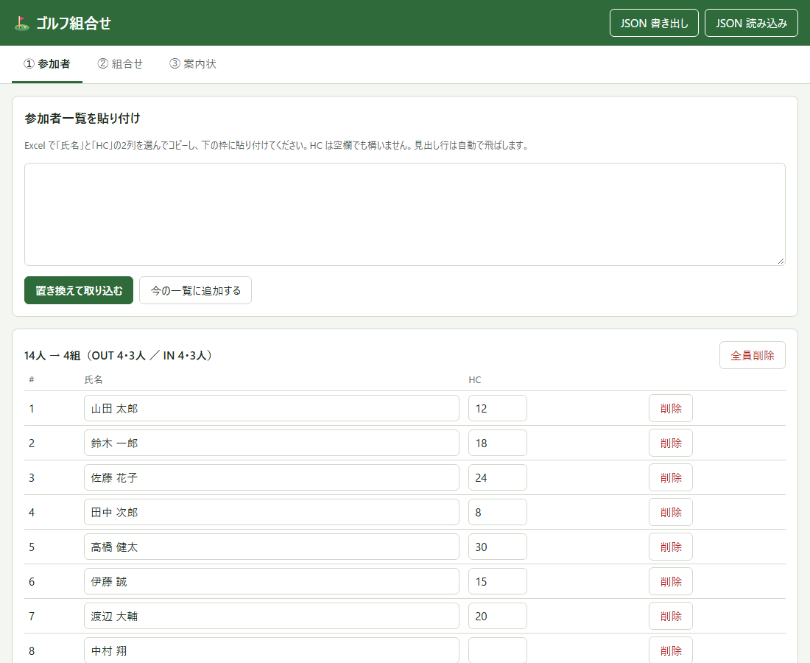
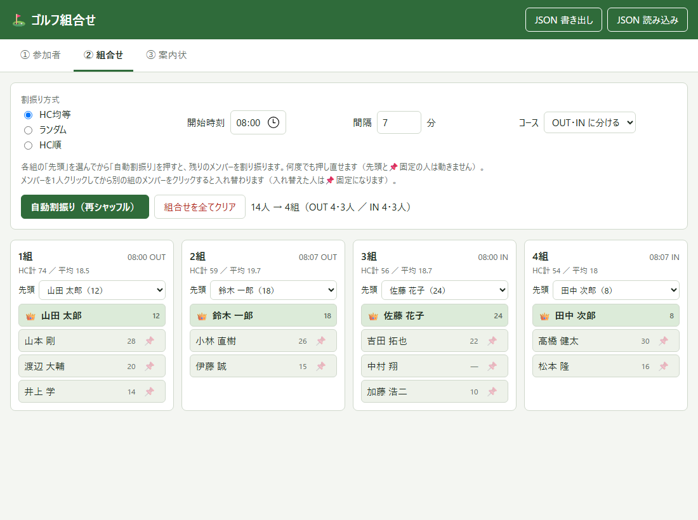
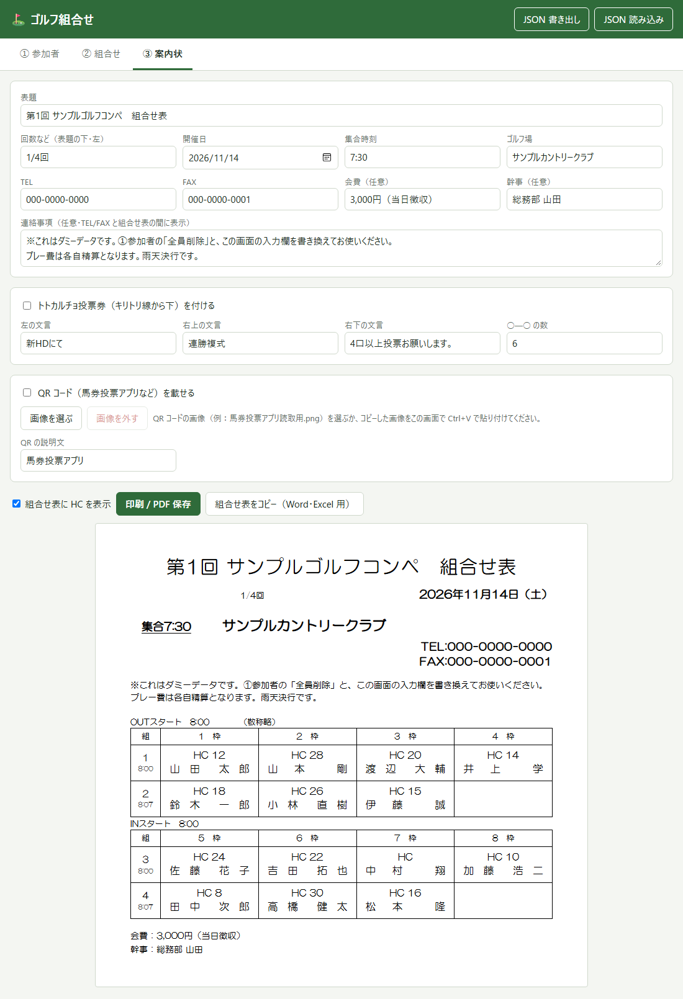

はじめに
- パソコンのブラウザ（Edge・Chrome）で使います。インストールやログインは不要です。
- 入力した内容は、使っているパソコンのブラウザの中だけに自動で保存されます。外部へ送信されることはありません。
- 初めて開いたときは、使い方を確かめられるようにダミーデータ（架空の14人と大会情報）が入っています。
作業は画面上部の ① 参加者 → ② 組合せ → ③ 案内状 の順に進めます。組合せが決まったら 履歴に保存 しておくと、次回から同じ組を避けられます（④ 履歴）。
1参加者を取り込む
- ダミーデータを消すときは、右側の 全員削除 を押します。
- Excel で「氏名」と「HC」の2列を選んでコピー（Ctrl+C）します。
- アプリの枠に貼り付け（Ctrl+V）、置き換えて取り込む を押します。
- HC は空欄でも構いません。1行目が「氏名」「HC」などの見出しなら自動で読み飛ばします。
- 読めない HC や重複した氏名があると、行番号付きでお知らせします。
- 取り込んだ後も、表の中で氏名・HC の修正、削除、1人追加 ができます。

2組合せを作る
- 開始時刻・間隔・コースを設定します。コースは「全組 OUT」「全組 IN」「OUT・IN に分ける」から選びます。
- 各組の 先頭 をプルダウンで選びます（選ばなくても構いません）。
- 割振り方式を選び、自動割振り（再シャッフル） を押します。
| HC均等 | 各組の HC の平均がそろうように割り振ります（HC が無い人は全体の平均として扱います）。 |
|---|---|
| ランダム | HC に関係なく、ばらばらに割り振ります。 |
| HC順 | HC が近い人同士を同じ組にします。 |
- 押すたびに別の組合せになります。先頭（👑）と📌固定の人は動きません。
- メンバーを1人クリックし、次に別の組のメンバーをクリックすると入れ替わります。入れ替えた人には自動で📌が付きます。
- 4人組が基本で、端数は3人組になります。「OUT・IN に分ける」では、OUT・IN それぞれの最後の組が3人組です。
- 「直近3回と同じ組をなるべく避ける」にチェックが入っていると、過去の大会で同じ組だった2人をなるべく別の組にします（④ 履歴）。前回同じ組だった人には 🔁 が付きます。

3組合せ表（案内状）を作る
- 表題・回数・開催日・集合時刻・ゴルフ場・TEL・FAX を入力します（ダミーデータは上書きしてください）。
- 必要に応じて、会費・幹事・連絡事項を入力します。連絡事項は TEL・FAX と組合せ表の間に入ります。
- 下のプレビューを確認し、印刷 / PDF 保存 を押します。
- PDF にする：印刷画面のプリンターで「PDF として保存」を選びます。用紙は A4 縦です。
- Word・Excel に貼る：組合せ表をコピー を押して、Word や Excel に貼り付けます。
- トトカルチョ投票券：「投票券を付ける」にチェックすると、キリトリ線から下に投票欄が付きます。文言と ○—○ の数も変えられます。
- QR コード：画像を選ぶ で馬券投票アプリなどの QR コード画像を選ぶと、表の右下に載ります（コピーした画像を Ctrl+V で貼り付けても可）。
- 「組合せ表に HC を表示」のチェックを外すと、氏名だけの表になります。

4履歴を残して、同じ組を避ける
- 組合せが決まったら、③ 案内状の 履歴に保存（④ 履歴にも同じボタンがあります）を押します。案内状の開催日・表題で記録されます。
- 次の大会では、③ 案内状の開催日を新しい日付にしてから、② 組合せで 自動割振り を押します。
- 直近3回の大会で同じ組だった2人を、なるべく別の組にします。前回をいちばん重く、2回前・3回前の順に軽く見ます。
- 同じ組を避けることを優先し、その中で割振り方式（HC均等など）に合わせて整えます。
- ② 組合せには「直近◯回と同じ組だった2人：前回 ◯組…」と件数が出ます。🔁 にマウスを乗せると、誰と同じ組だったかが出ます。
- 先頭（👑）や📌固定の人どうしが前回も同じ組だった場合や、参加者が少ない場合は、避けきれないことがあります。そのときは重複がいちばん少ない組合せになります。
- 案内状の開催日と同じ日付の履歴は「今回の大会」とみなし、避ける対象に入れません（保存した後に割り振り直しても、自分自身を避けることはありません）。
- 別のコンペの履歴は自動で使いません：③ 案内状の表題が同じコンペの回だけを使います。表題は「第〇〇回」・空白・末尾の「組合せ表」を無視して比べるので、「第114回雄J会 組合せ表」と「第115回 雄J会」は同じコンペです。直近3回も、同じコンペの回の中から数えます。
- 過去の回の表題が違っていて対象にならないときは、④ 履歴の一覧で表題を直してください。④ 履歴には今回のコンペ名が表示されます。
- 同じ開催日・同じコンペでもう一度保存すると、その回の履歴が置き換わります。不要な履歴は ④ 履歴の 削除 で消せます。
- 氏名で照合します。大会ごとに氏名の書き方（漢字など）が違うと別人とみなされます（空白や全角・半角の違いは無視します）。
履歴も、使っているパソコンのブラウザの中に保存されます。幹事やパソコンが替わるときは、JSON 書き出し したファイルを引き継いでください（履歴も含まれます）。
データの保存とバックアップ
- 入力内容は自動で保存されます。ブラウザを閉じても、次に開いたときにそのまま続きから使えます。
- 右上の JSON 書き出し で、データをファイルに保存できます。別のパソコンでは JSON 読み込み で続きから作業できます。
ブラウザの「閲覧データの削除」をすると、保存した内容も消えます。大会の前には JSON 書き出しでバックアップを取っておくと安心です。
困ったときは
| 表示が崩れた・古い | キーボードの Ctrl+F5 で再読み込みしてください。 |
|---|---|
| 未割当の人がいる | ② 組合せの 自動割振り を押すか、未割当の人をクリックしてから組の空き枠をクリックします。 |
| 最初からやり直したい | ① 参加者の 全員削除 で参加者と組合せが消えます（履歴は残ります）。案内状の入力欄は、文字を消すか書き換えてください。 |
| 前回と同じ組が出る | ② 組合せの「直近3回と同じ組をなるべく避ける」にチェックが入っているか、③ 案内状の開催日が今回の日付になっているか、④ 履歴で前回の表題が今回と同じコンペ名になっているかを確かめてください。 |
| コピーできない | 表示された枠の文字を選んで Ctrl+C でコピーしてください。 |